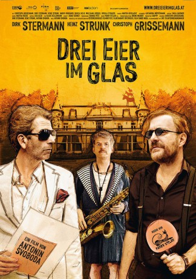

#3556 Drei Eier im Glas
 
 IMDB-Wertung: 6.2 / 10
IMDB-Wertung: 6.2 / 10  Metascore: 0
Metascore: 0 
Drei einsame und gestrandete Männer finden über die Liebe zum Saxophon spielen zueinander. Barney Schweinheimer (Dirk Stermann), ein ehemals international gefragtes Model, bleibt von seiner Karriere nur noch ein Koffer und ein altes Saxophon. Michael Kiesel (Heinz Strunk) lebt unter der Fuchtel seines tyrannischen Vaters und bietet „Saxophonkurs für Singles“ an. Dragan Kuhl (Christoph Grissemann) ist die meiste Zeit einsam in seiner riesigen Villa und spielt Pingpong. Zwischen Schnaps und Zwieback gründen die drei eine Wohngemeinschaft, bis Youtube ihr Leben verändert...
WEBHDRIP DUBBED
Jahr: 2015
Dauer: 91 Minuten
FSK:
Land: Österreich Studio: FilmladenTonspuren:
Untertitel:
Auflösung: 720p (1280x688) Größe: 1392 MB
Genre: Komödie
Regisseur: Antonin Svoboda
Drehbuch: Otfried Preußler
Soundtrack:
Darsteller:
- Ingrid Burkhard als Mutter Drakuhl
 Haymon Maria Buttinger als Helmut
Haymon Maria Buttinger als Helmut- Christian Dolezal als Nachbar Alfred
- Christoph Grissemann als Dragan 'Drakuhl' Kuhl
- Wolfgang Hübsch als Meinhard Gnom
- Davis O. Nejo als Richard Song
- Angelika Niedetzky als
- Martin Scheiner als Rainer Werner
- Dirk Stermann als Bernhard 'Barney' Schweinheimer
 Ursula Strauss als Heidrun Fröhlich
Ursula Strauss als Heidrun Fröhlich- Peter Strauß als Hubert
- Heinz Strunk als Michael Kiesel
- Alexander Tschernek als Manfred
Datei: X:\2015(A-F)\Drei Eier im Glas (2015, FSK, 1280x688).mkv seit 29.04.2016
Festplatte: HD 2015(A-Z)
 Es gibt insgesamt 143 Filme in der Gruppe '2015(A-F)'
Es gibt insgesamt 143 Filme in der Gruppe '2015(A-F)'